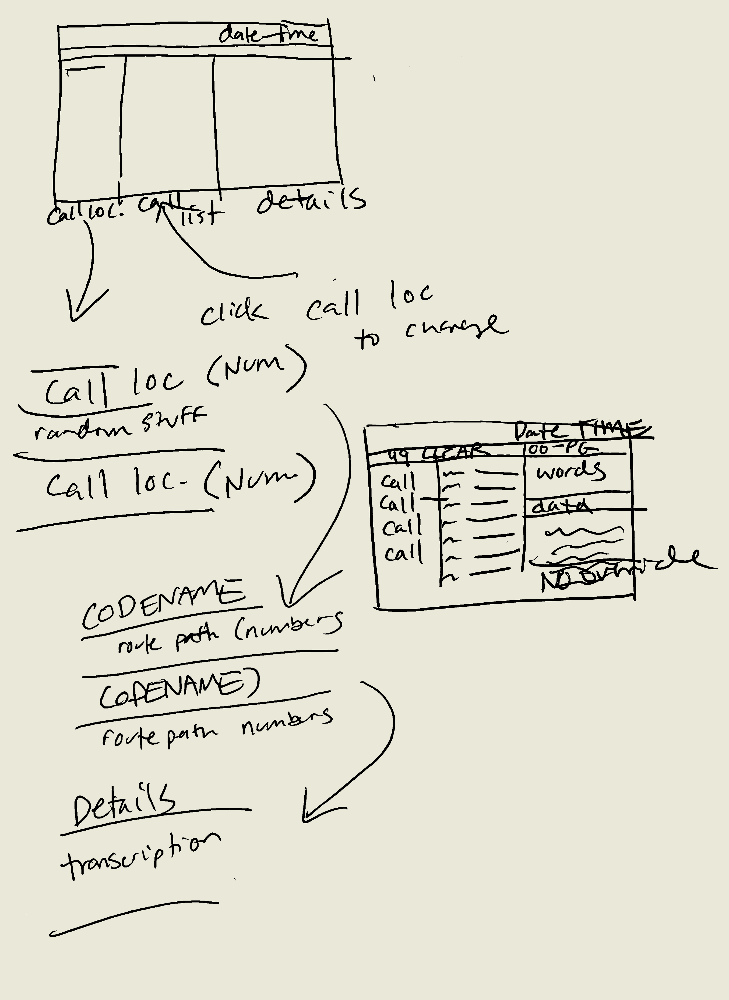

1-week UI prototype that imagines a game in which the player is an NSA agent screening call transcripts. Inspiration was drawn from leaked NSA documents and the 4ESS interface.
This prototype is a quick exploration of aesthetics with Unity's UI system. I mainly focused on tuning font and paragraph measurments, while emphasizing balanced placement of elements. As illustrated in my initial sketch, the interface is split into a locations, calls, and transcripts columns.
Font used: Perfect DOS VGA 437
Created in Unity Engine with C#.